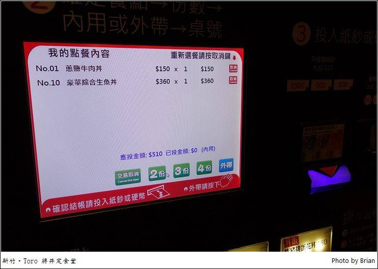
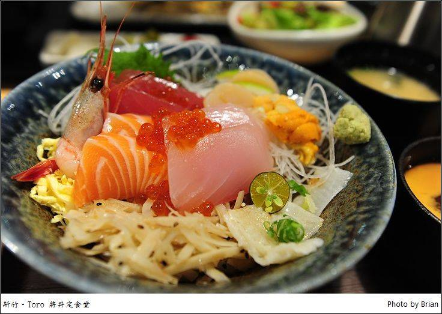

新竹 Toro 賞，是竹北地區相當知名的日本料理，最近他們的腳步也進到新竹市了~~這家 Toro 將丼定食堂，就是他們新開拓的關係企業，其中不同的地方在於，這家位在公園路上的 Toro 將丼定食堂，走的是平價日本料理路線。
店家的位置在公園路上，從孔廟這邊東山路、食品路過來的話，就在左手邊新竹消防局第二大隊光復分隊旁邊，原本看著 google map，他們把這地址指引進去一旁的巷弄裡，一開始讓我們在這巷弄中多兜了好幾圈，最後才在消防隊旁邊看到這家有點退縮在後面的 Toro 將。 店家的光線和招牌明亮，在這一區夜裡算是相當的清晰，外牆的帆布上同時寫著 Toro 將丼定食堂及 Go Ease 夠意思餐酒館，看來再不久後這邊就會有另外一家特別的餐廳要開張了喔~~期待期待~^^
店內的光線相當的明亮舒適，很清爽簡單的裝潢，木地板搭配上屬亮色系的桌椅讓整個空間感覺很舒服，這樣簡簡單單的氣氛就是要讓大家可以放鬆心情好好地品嘗一番美食。

位置大多是四人座位，他們還提供置物籃讓大家可以放自己的包包東西，還滿貼心的。而廚房透過玻璃門隔離開來，從外面可以看到師傅在裡面忙碌的模樣，油煙也不會影響到用餐的區域，還不錯。
菜單很簡單，就是一面的選項，不過基本的日本料理丼飯、定食的選項通通有，丼飯類基本上都包含了茶碗蒸與味噌湯，而定食類的還多了小菜、沙拉、茶漬湯，超豐盛的內容物，重點是這樣的豐盛內容中，最便宜的餐點只要 150元，最貴的也只有 360元!!大多數的餐點約在 290元左右，感覺價格很平易近人。
點餐的方式很特別，就在門口的櫃台旁邊，有一台自助點餐機。就讓我不禁想到前陣子造訪的弗薇越式餐廳，也是這樣的自助點餐機，想不到現在的科技越來越發達，什麼都可以用機器來取代了~~從點餐到付款，完全不需要再勞煩工作人員處理，科技真的太進步了~~
餐點現點現做所以需要等候一下，桌上的茶水可以自己取用，全部的東西都在桌上，需要什麼就自己來，店家也不收服務費，整個感覺還滿不錯的。
第一個上來的是醬燒星鰻丼，那幾乎要蓋住整個碗色澤超漂亮的星鰻，表面烤過帶有點些許的黑色，但是本身的鮮黃色澤加上醬汁那油亮的色調，讓我們看的就覺得好好吃。 星鰻吃起來的肉質較為細緻，細細綿綿的口感吃起來很好吃，同時再搭配著白蘿蔔、薑片、牛蒡等等，他們的餐點中除了主餐好吃之外，連那些配菜吃起來的味道也都很好吃耶~~ 同時還有一碗的茶碗蒸和味噌湯，這樣超豐富的組合價格竟然只需要 240元，只能說真的超感心的!!
綜合天婦羅定食看起來又更加豐富了!! 光是送上來的餐盤就比丼飯的還要大，主餐之外，白飯、蘿蔔泥、沙拉、茶碗蒸、味噌湯和小菜，後來還另外送上了一壺茶湯，可以淋入飯中變成茶泡飯，讓我們一看都直說這看起來也太豐盛了吧~而且只比剛剛那星鰻多了 50元而已耶~ 綜合天婦羅中有蝦子、茄子、芋頭及香菇，蝦子還是一次兩隻大隻的，雖然經過油炸，不過不會讓人覺得還是油膩膩的樣子，吃起來很好吃，讓朋友一邊吃一邊點頭。就讓我想到日劇天皇的御廚中，主廚想要讓天皇吃到熱騰騰的好滋味時，腦子裡想的就是炸天婦羅阿~~看著他把那蝦子沾粉放進油鍋中炸的畫面，一整個就好迷人~~
沙拉很清爽，用的是和風沙拉醬，而且他們的沙拉醬和小菜的部分，全部都是師傅自己製作的耶，味道和口感都很不錯。 而這定食中最特別的就是還會另外附上一壺店家自行熬煮的昆布高湯，可以讓大家淋到白飯中變成茶泡飯，吃起來的味道還滿不錯的。(怎麼多了這麼一壺昆布高湯，就讓我們覺得這一道超豐富，CP值超高~:p)
在羨慕完定食的豐盛後，這個豪華綜合生魚片丼原來一點也不遜色。 蓋滿了整個碗的好料，鮭魚、鮪魚、甜蝦、干貝、海膽，一整片超豐盛的海鮮就鋪在碗中，再加上蛋絲、牛蒡等等，果真是超豪華的生魚片丼飯，而且都還搭配著茶碗蒸及味噌湯呢。
搭配的茶碗蒸份量也很大，一碗飽滿的蒸蛋還有香菇、蝦子、白果等等的配料，一整個就是要讓我們超飽的。
最後一道炸豬排蛋花丼，超厚實的炸豬排，上面淋上了半熟的蛋花，有點像是親子丼的感覺。而他們的豬排很厚實，但是外面炸的脆脆的同時，卻還可以保有裡面的鮮嫩度，不會讓豬排變的過乾過柴，處理的很棒。 丼飯中還加入了洋蔥及柴魚片，吃起來味道也很棒。
店家位置雖然在比較少人車的新竹公園旁邊，但是這家才新開幕的 Toro 將丼定食堂，走平價路線的同時他們的餐點和內容物真是一點都不含糊，超豐盛的一份定食讓我們吃的相當的滿足，而且以他們的價位，大多都在 200-300元左右，最便宜的甚至只要 150元，你看看這樣的價位還可以吃到茶碗蒸及味噌湯，是不是一整個超划算的。 而且雖然他們不收服務費，但是服務人員的態度都相當的親切，從我們走在店門前的走道靠近時，他們就很積極主動地跑過來幫忙開門，上餐收拾的時候也都相當的客氣，讓人用餐時的感覺真的很棒喔!
引自:https://www.walkerland.com.tw/article/view/115228